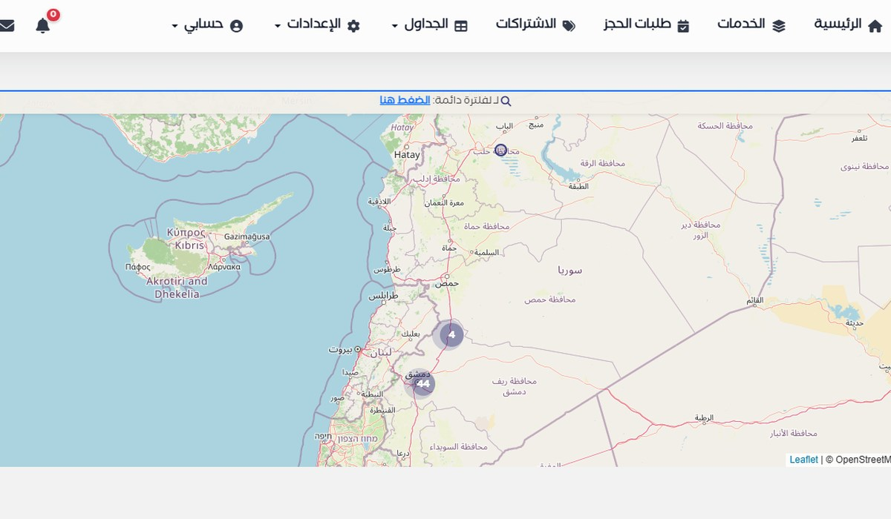

Information Management
Data-collection workflows, structured information systems, data quality, reporting and operational information designed for the decisions teams need to make.
- Workflow design
- Data quality
- Operational reporting
01Anas Al-Najjar
I design practical data systems, automate field-data workflows, and build tools that help teams collect, manage and use information better.

Technical capability supports the operation: from collection design and data quality to automation, reporting, deployment and training.
02Core capabilities
The focus is the information workflow: how data is collected, checked, managed, reported and used. Software is one of the tools used to make that workflow reliable.
Data-collection workflows, structured information systems, data quality, reporting and operational information designed for the decisions teams need to make.
Practical collection workflows, field-team support, validation rules, feedback loops, monitoring and coordination from intake through delivery.
Python, KoBoToolbox, Excel, Power BI, databases and APIs used to reduce manual work, organize records and improve data quality.
Applied AI, APIs and focused software products used when they solve a concrete operational problem—not as separate technology showcases.
03Selected work
A humanitarian case-management information workflow that turned KoBo submissions into organized assignments, individual documentation, validation feedback and monthly reporting.
Thousands of case records had to move from collection to case managers, documents and reports without losing quality or traceability.
KoBo intake, case distribution, validation feedback, individual PDF generation and recurring management outputs.
Python automation processed approximately 3,000 records and supported a workflow involving approximately 40 case managers.
Less repetitive handling, clearer quality checks and consistent monthly dashboards and reports.
A customized operational information system that replaced fragmented Al-Yaseer, KoBo and Excel processes. It organized approximately 10,000 family records with attachments, PDFs, images, local backups and role-based workflows. I handled customization, deployment, infrastructure and device setup, training for approximately 40 users, and maintenance.
Read the case studyA bilingual academic prototype combining a Telegram interface, retrieval with FAISS, LLM responses and backend tool actions through FastAPI. It demonstrates applied AI and system integration without claiming production guest-performance results.
View on GitHub
A product experiment in structuring community-service information and making it easier to discover providers through location, maps and practical digital-service design. It is one project within a broader information-systems practice.
View project04Other projects
These smaller projects show continued product-building and experimentation. They support the main professional focus rather than compete with it.
An Arabic-first personal and shared-finance application with local-first entry, synchronization, reporting and planning.
An Arabic-first pregnancy companion with guest-mode guidance, account synchronization and practical pregnancy tracking.
A focused service initiative for field data collection, facility databases, market mapping, quality control and decision-ready outputs.
Visit siteA prototype support platform for families of children with developmental and learning challenges, combining structured content, communities and applied AI guidance.
View prototypeAn RTL-first digital library for discovering, reading and preserving the works of Syrian writer Omar Lotfi Al-Najjar.
Visit library05Working method
The highest-leverage technical decision is usually made before implementation begins: defining the real problem, ownership and information flow.
Users, decisions, records, failures and constraints.
Data model, permissions, validation and outputs.
Implementation, migration, deployment, training and documentation.
Use real errors and reporting needs to refine the system.
06About Anas
My work starts with the information need: how teams collect, validate, manage and use data. I can then build the automation, database, API or interface required to make that workflow practical.
My background combines information systems development, data operations, humanitarian information management, field implementation, and project delivery. That combination lets me work credibly with both leadership and the people using the system every day.
07Start with the problem
Send me the current process, who uses it, and what must improve. I will help identify the most practical first move.